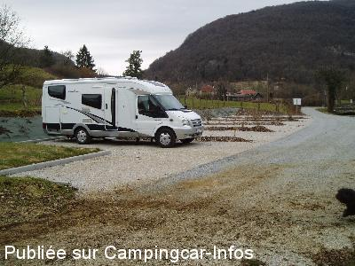
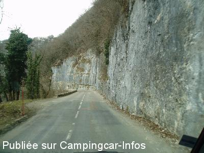
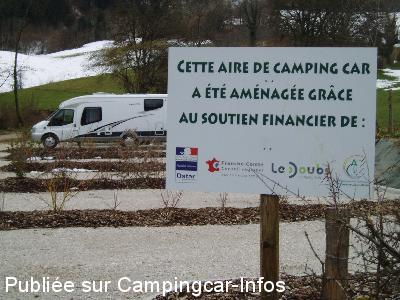

APN = Parking toléré jour/nuit de :
NANS SOUS SAINTE ANNE
(N° 426)
Accès/adresse :
Grande Rue, D942
25330 NANS SOUS SAINTE ANNE
25330 NANS SOUS SAINTE ANNE
Latitude : (Nord) 46.97681° Décimaux ou 46° 58′ 36′′
Longitude : (Est) 5.99891° Décimaux ou 5° 59′ 56′′
Tarif : Gratuit
Services :
Autres informations :

Le 05/07/2013 par christian belgium

Le 05/07/2013 par christian belgium

Le 05/07/2013 par christian belgium
de
GILEVE
le 18/08/2012 :
Le conseil général a réalisé un parking spécial pour 6 ccars, places larges et séparées par des haies. Pour l'accès, suivre le fléchage Taillanderie, si c'est complet possibilité de se mettre de l'autre coté du ruisseau. Nuit super calme. La visite de la taillanderie vaut le coup
Le conseil général a réalisé un parking spécial pour 6 ccars, places larges et séparées par des haies. Pour l'accès, suivre le fléchage Taillanderie, si c'est complet possibilité de se mettre de l'autre coté du ruisseau. Nuit super calme. La visite de la taillanderie vaut le coup
de
monique lavergne
le 26/08/2005 :
Aire calme, à recommander - poss garer 4 à 5 CCars - fromagerie avec accueil très sympa et bons produits - poss stat plus bas au parking de la source du Lison, un peu isolé mais très calme.
Aire calme, à recommander - poss garer 4 à 5 CCars - fromagerie avec accueil très sympa et bons produits - poss stat plus bas au parking de la source du Lison, un peu isolé mais très calme.
de
Jean - Paul. Rivoalen
le 15/07/2005 :
Plutôt que de rester dans le centre du bourg face à la laiterie, nous nous sommes garés pour la nuit juste avant le lieu dit "La Taillanderie" , calme assuré.
Parking toléré sur la partie herbue à droite en bordure de route, face au parking du camping.
Plutôt que de rester dans le centre du bourg face à la laiterie, nous nous sommes garés pour la nuit juste avant le lieu dit "La Taillanderie" , calme assuré.
Parking toléré sur la partie herbue à droite en bordure de route, face au parking du camping.
de
le 25/03/2002 :
Parking toléré, très agréable, en face de la laiterie où la production est délicieuse.
Parking toléré, très agréable, en face de la laiterie où la production est délicieuse.